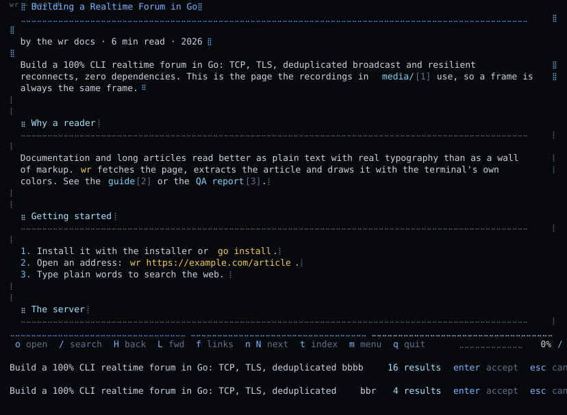

Read the web as plain text,
draw it with braille.
wr fetches a page, extracts the article and opens it in an animated reader
built with Bubble Tea: properly formatted Markdown (real headings, bold, lists, tables — no
# or ** in sight), per-language syntax highlighting, and a full browsing
experience: click links, go back and forward, an address bar that also searches the web, history,
bookmarks. Everything uses your terminal's own 16-color ANSI palette, so it follows your theme
with zero configuration.
$ curl -fsSL https://raw.githubusercontent.com/sazardev/wr/main/install.sh | sh # or $ go install github.com/sazardev/wr@latest $ wr https://example.com/some-article $ wr rust async book # not an address? it is searched on the web $ wr # the start page: your bookmarks and recent pages▊
THE SCREEN
⣿ Building a Realtime Forum in Go ⡇ ⣀⣀⣀⣀⣀⣀⣀⣀⣀⣀⣀⣀⣀⣀⣀⣀⣀⣀⣀⣀⣀⣀⣀⣀⣀⣀⣀⣀⣀⣀⣀⣀⣀⣀⣀⣀⣀⣀⣀⣀⣀⣀⣀⣀⣀⣀⣀⣀⣀⣀⣀⣀⣀ ⡇ ⡇ Build a 100% CLI realtime forum in Go: TCP, TLS, deduplicated ⡇ broadcast and resilient reconnects, zero dependencies. ⡇ ⡇ ┌ go ⡇ │ package main ⡇ │ ⡇ │ func main() { ⡇ │ srv := tls.Listen("tcp", ":8443", cfg) ⡇ │ } ⡇ └──────── ⡇ ⣀⣀⣀⣀⣀⣀⣀⣀⣀⣀⣀⣀⣀⣀⣀⣀⣀⣀⣀⣀⣀⣀⣀⣀⣀⣀⣀⣀⣀⣀⣀⣀⣀⣀⣀⣀⣀⣀⣀⣀⣀⣀⣀⣀⣀⣀⣀⣀⣀⣀⣀⣀⣀⣀⣀⣀⣀⣀⣀⣀⣀ o open / search H back L fwd f links t index r reload m menu q quit ⣷⣀⣀⣀⣀⣀⣀⣀⣀⣀⣀⣀⣀⣀⣀⣀⣀⣀⣀⣀⡇ 6%
Everything follows your terminal's 16 colors. The scrollbar, the progress bar, the page reveal and the loading wave are braille, and the springs are from harmonica.
WHAT YOU GET
Formatted Markdown
Real headings, bold, lists, tables and quotes — no # or ** in sight.
Code with color
Per-language syntax highlighting in a labeled frame; the language is kept from the page.
Search and sections
/ searches as you type with highlighted matches; t opens the heading index.
Select and copy
Drag to select and let go to copy. Code copies without its frame or margin.
Links by label
Click them, Tab through them, or press f and type a short hint.
History and bookmarks
Back and forward restore the exact spot; cached pages open instantly.
Make it yours
About 30 settings and every key binding, changed live from the menu and saved.
Spring motion
Spring scrolling, page reveals and a braille loading wave — with zero idle cost.
THE UI, RECORDED
Frames captured from the real program with VHS
(see media/README.md): the same
reproducible tapes and the automatic script that regenerates every asset when wr changes.



SIX PALETTES
The same document in six faithful terminal palettes. Pick one — the whole page, the braille field and the footer bar follow. Without a choice it follows your system preference, and the program itself always follows your terminal's 16 colors.
THE DESIGN SYSTEM
Flat by rule
No radius, no shadow, no gradient, no translucency. Separation is a 1px line or a
braille glyph.
Glyph chrome
Braille fills (⣀ ⣄ ⣤ ⣦ ⣶ ⣷ ⣿) draw rules, bars and bullets; box-drawing draws frames.
Eight-color discipline
Six tokens per theme: bg, surface, fg, dim, accent, accent2. Nothing else is colored.
Motion with a brake
Braille animations, easing only; prefers-reduced-motion stops all of them.
The rules, the palette table and the glyph inventory: docs/DESIGN.md.